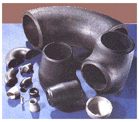
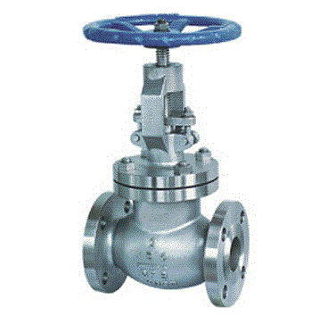
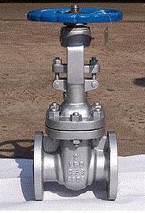
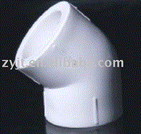
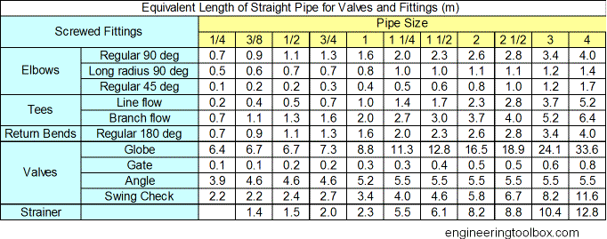
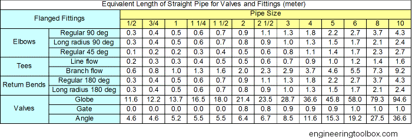
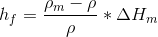
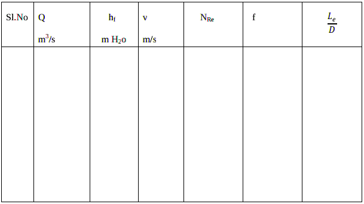

Experiment No.2
FLOW THROUGH FITTINGS
Background and Theory
One of the most common problem in fluid mechanics is the estimation of
pressure loss. Calculating pressure losses is necessary for determining the
appropriate size pump.
Knowledge of the magnitude of frictional losses is of
great importance because it determines the power requirements of the pump
forcing the fluid through the pipe. For example, in refining and petrochemical
industries, these losses have to be calculated accurately to determine where booster
pumps have to be placed when pumping crude oil or other fluids in pipes to
distances thousands of kilometres away.
Pipe losses in a piping system result from a number of system characteristics,
which include among others; pipe friction, changes in direction of flow,
obstructions in flow path, and sudden or gradual changes in the cross-section and
shape of flow path.
Whenever the velocity of a fluid is changed, either in direction or magnitude, by a
change in the direction or size of the conduit, friction additional to the skin friction
from flow through the straight pipe is generated. Such friction includes form
friction resulting from vortices which develop when the normal streamlines are
disturbed and when boundary-layer separation occurs. The form friction is due to
the obstructions present in the line of flow, it may be due to a bend or a control
valve or anything which changes the course of motion of the flowing fluid.
Fittings and valves also disturb the normal flow lines and cause friction. In short
lines with many fittings , the friction loss from the fittings may be greater than that
from the straight pipe.
As in straight pipe, velocity increases through valves and fittings at the expense of
head loss. This can be expressed by equation similar to Equation 1:
.gif) (1)
(1)
Where V is the average velocity of the pipe leading to fitting.
K
e is called the resistance coefficient and is defined as the number of velocity
heads lost due to the valve or fitting. It is a measure of the following pressure
losses in a valve or fitting:
- Pipe friction in the inlet and outlet straight portions of the valve or fitting
- Changes in direction of flow path
- Obstructions in the flow path
- Sudden or gradual changes in the cross-section and shape of the flow path
Pipe friction in the inlet and outlet straight portions of the valve or fitting is very
small when compared to the other three. Since friction factor and Reynolds
Number are mainly related to pipe friction, K
e can be considered to be independent
of both friction factor and Reynolds Number. Therefore, K
e is treated as a constant
for any given valve or fitting under all flow conditions, including laminar flow.
Indeed, experiments showed1 that for a given valve or fitting type, the tendency is
for K
e to vary only with valve or fitting size.
Pressure losses in fittings is usually represented by equivalent length( Leq). It is is
the length of a straight pipe that offers same resistance to flow as that offered by
the fitting. The ratio L/D is equivalent length in pipe diameters of straight pipe that
will cause the same pressure drop or head loss as the valve or fitting under the
same flow conditions.
The ratio Leq/D
is equivalent length in pipe diameters of straight pipe that will
cause the same pressure drop or head loss as the valve or fitting under the same
flow conditions.
Friction loss from different fittings in a pipeline ,must be accounted for when
calculating friction losses for each section of pipe. Add the equivalent length of
pipe for each fitting or valve that occurs in each section of the pipeline.
Fittings

Globe valve

Gate Valve

90 degree Bend
45 degree elbow

Screwed Fittings - equivalent length in meter
Equivalent length (in meters) of straight pipe for fittings like bends, returns, tees and valves.

Flanged Fittings - equivalent length in meter
Equivalent length (in meters) of straight pipe for fittings like bends, returns, tees and valves.

Procedure
:
FLOW THROUGH FITTINGS
Aim of the Experiment:
To determine the equivalent length of the following fittings:
(a) Globe valve (b) gate valve (c) regular 450 Bend (d) regular 900 Bend
(f) Return bend 1800 deg
Apparatus required: CCL4 manometer,Hg manometer
Procedure:
- Keep the valve leading to fittings open and valves leading to other lines closed.
- Keep the bypass valve completely open and the main valve completely closed. Switch on
the pump.
- Connect a CCLmanometer to the pressure taps across the globe valve. Ensure that no air
bubbles present and height in both the limbs of manometer are the same.
- Set a flow rate of water through the pipe by opening the main valve and throttling the
bypass valve suitably using the rotameter.
- Note down the rotameter reading and manometer reading after a steady state is attained.
- Increase the flow rate of water by opening the main valve and throttling the bypass valve
suitably and repeat step 4 and 5.
- Use mercury manometer for higher flow rates.
- Take eight readings with CCL4 manometer as well as with Hg manometer.
Data:
Diameter of the pipe connected to globe valve = D = m
Density of water = .gif) = kg/m
Viscosity of water =
= kg/m
Viscosity of water =.gif) =cp= kg/ms
Density of CCl4 = 1600 kg/m
Density of Hg = 13600 kg/m
Calculations:
=cp= kg/ms
Density of CCl4 = 1600 kg/m
Density of Hg = 13600 kg/m
Calculations:
- Flow rate:
- ∆Hm is cm of manometric fluid:
- Volumetric flow rate, Q =m3/s
- Pressure drop in m of water hf = 
- Cross sectional area of the pipe A =
.gif)
- Average velocity through the pipe = V=Q/A = m/s
- Reynolds number
.gif)
- Friction factor f is calculated using f =
.gif)
- Equivalent length of Globe valve:
.gif)

Result:
Report equivalent length of the fitting and compare with other types.
Assignment
1.A piping run consists of 37 ft of 4 in. diameter straight pipe, three short
-radius elbows, two wide - open gate valves, and one wide - open globe valve. What total
equivalent length of straight pipe is used to calculate head loss?
2.Go around your house or college, look for water pipelines. Identify the valves and
fittings. Try to find the nominal pipe size(approximate ) based on your
observation. Calculate the pressure drop involved between any two points
including fittings for a given flow rate
Reference
1. Warren Lee McCabe, Julian Cleveland Smith, Peter Harriott ,Unit operation of chemical engineering , 5th Edition,1993
2. Coulson and Richardson, Chemical Engineering Volume I Pargamon Press 3rd edition.1977
3. Walter L. Badger and Julius T. Banchero, Introduction to Chemical engineering.. Tata McGraw-Hill book Edition 1997,India
4.Perry's Chemical Engineers' Handbook (7th Edition) Edited by Perry, R.H.; Green, D.W. © 1997 McGraw-Hill
5.A. S. Foust, Principles of Unit Operations, 2nd ed. John Wiley and Sons, Inc., 1980
6.Industrial Instrumentation by Donald P Eckman, Wiley Eastern Publication
7.Lecture notes by M.Subramanian http://www.msubbu.in/ln/fm/